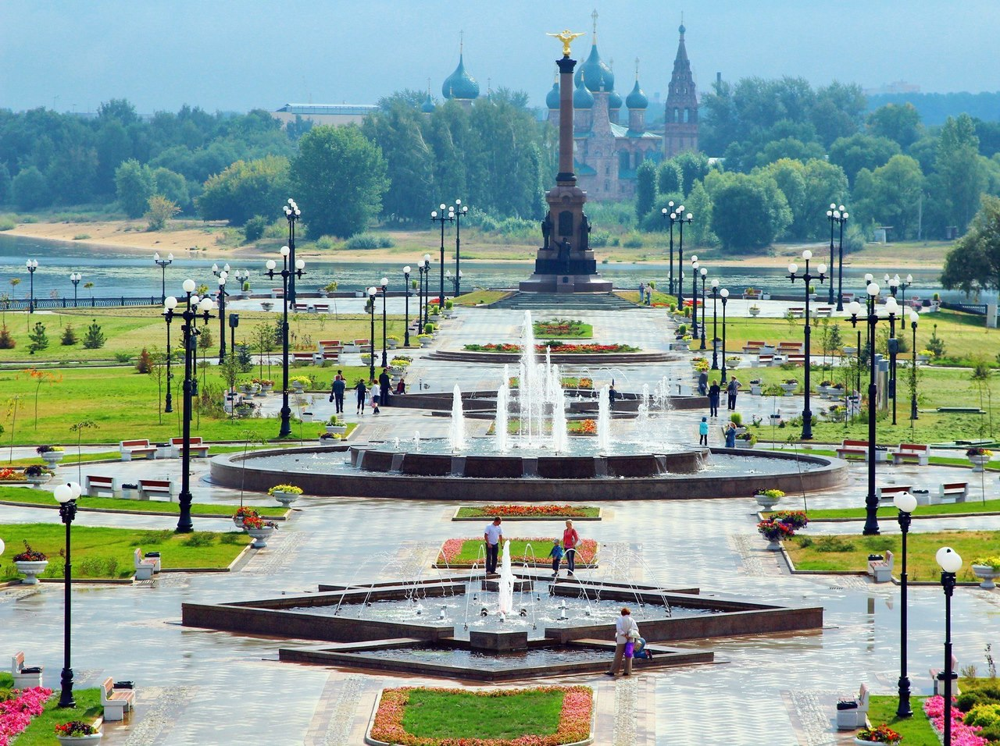

Ярославль
Ярославль — город в России, административный центр Ярославской области. Население — 570 824 чел. (2023). Ярославль — третий по численности населения город Центрального федерального округа Российской Федерации. Город является транспортным узлом, из которого расходятся железнодорожные линии и автодороги в направлении Москвы, Вологды, Рыбинска, Костромы, Иванова и Кирова. В Ярославле действуют также речной порт и аэропорт. Площадь города составляет 205 км².
История
Ярославль — один из старейших русских городов, основанный в XI веке и достигший своего расцвета в XVII веке; в 2010 году город отметил своё тысячелетие. День города в Ярославле обычно отмечается в последнюю субботу мая (в 2010 году в связи с тысячелетием города празднование проводилось с 10 по 12 сентября). Исторический центр города, расположенный у слияния рек Волги и Которосли, является объектом Всемирного наследия ЮНЕСКО.
Достижения
В административном отношении Ярославль — центр не только области, но и Ярославского района, в который не входит. Обладает статусом города областного значения и образует городской округ город Ярославль c единственным населённым пунктом в его составе. Указом Президента Российской Федерации от 2 июля 2020 городу присвоено звание «Город трудовой доблести». Один из крупнейших городов в европейской части России. Имеет статус города «Золотого кольца» — известного туристического маршрута по древним городам Владимирского княжества.
Цыганов Денис, РФ-31 БО